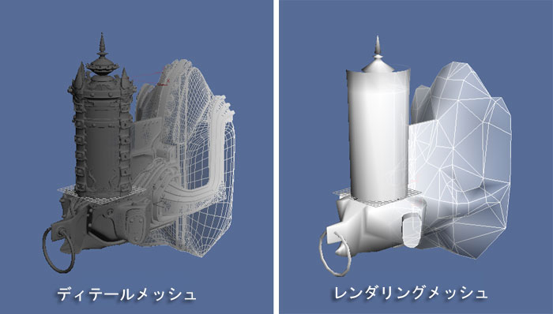
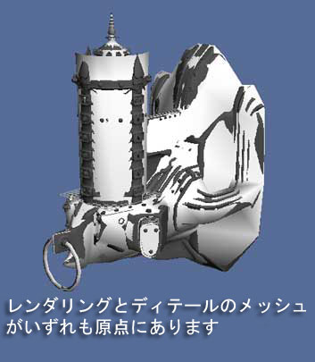
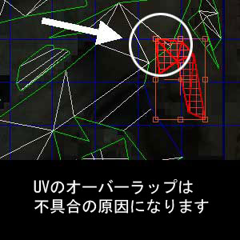

UDN
Search public documentation:
ImportingStaticMeshTutorialJP
English Translation
中国翻译
한국어
Interested in the Unreal Engine?
Visit the Unreal Technology site.
Looking for jobs and company info?
Check out the Epic games site.
Questions about support via UDN?
Contact the UDN Staff
中国翻译
한국어
Interested in the Unreal Engine?
Visit the Unreal Technology site.
Looking for jobs and company info?
Check out the Epic games site.
Questions about support via UDN?
Contact the UDN Staff
StaticMesh のインポートのチュートリアル
ドキュメントの概要： UnrealEngine3 に StaticMesh をインポートするためのチュートリアル ドキュメントの変更ログ： James Golding により作成。はじめに
ここでは、UnrealEngine3 のアートのパイプラインと StaticMesh の基礎について説明します。特に、エンジンに新たに搭載された機能と手順について詳しく見て行きます。新バージョンで変更のなかった機能については UDN の他のページで説明しています。Realtime バンプマッピング： ディテールメッシュとレンダリングメッシュ
UnrealEngine3 では Realtime にバンプマッピングを利用できます。この新しい技術によって斬新なモデリング技術がもたらされました。法線マップは高ポリゴンの「ディテール」メッシュから、ジオメトリのディテールを読み込んだ順に徐々に生成されます。ディテールメッシュが Realtime に稼動することは決してありません。ディテールメッシュは法線マップに情報を与えるために存在します。そのため、ポリゴン数の制限は非常に少なくなり、ディテールの品質はシネマティクスレベルとなります。
生成された法線マップは、UE3 の低ポリゴンの「レンダリング」メッシュに適用され、最終的には実際よりもかなりポリゴン的に複雑なメッシュが完成します。エクスポート用にコンテンツを準備する
この時点で、空間の同じ点（おそらくは原点）にディテールメッシュとレンダリングメッシュが生成されています。レンダリングメッシュはアンラップで、UV もうまく設定されているはずです。
SHTools の作業過程はレンダリングメッシュのアンラップに基づいているため、これは重要です。UV について
法線マッピングの処理ではアンラップに特別な配慮が必要です。最高の仕上がりには UV がオーバーラップしないことが重要です。ジオメトリの性質上、同じものなら UV をスタックすることができます。たとえば下のイメージのように、メッシュがオーバーラップする部分の形状が違う場合はお勧めしません。:
UV は、下のスクリーンショットのようにミラー状のジオメトリの場合にスタックできます。: ディテールメッシュの場合は、SHTools 処理を機能させるためにテクスチャリングする必要がないため、こうした制限は必ずしも当てはまりません。
ディテールメッシュの場合は、SHTools 処理を機能させるためにテクスチャリングする必要がないため、こうした制限は必ずしも当てはまりません。
法線マップの生成
ディテールメッシュからの法線マップの生成は SHTools プラグイン、または 3DStudio Max、Maya、Softimage XSI のツールで行われます。このチュートリアルは簡単な段階的な説明になります。 SHTools メッシュプロセッサとサーバーは、Max/Maya/XSI が法線マッピングのツールを持つ以前に作成されることに留意してください。現在は通常、これらは法線マップを作成する際に用いられます。法線マップの作成には Maya などの 3D モデリング パッケージを使用することが推奨されます。ジオメトリのエクスポート
メッシュのエクスポートの詳細なプロセスについては、 メッシュのエクスポートのチュートリアル ページにてご覧いただけます。 注記:法線マップを SHTools で UE3 にエクスポートする (上記にて記載されています) 事は現時点でサポートされていません。UnrealEngine3 へのコンテンツの取り込み
すべてがエクスポートされ準備ができたので、Unreal Editorでアセットをエンジンに取り込みます。 メッシュのインポートの詳細なプロセスについては、 メッシュのインポートのチュートリアル ページにてご覧いただけます。 Generic ブラウザと新しいパッケージシステムについての詳細は、 Generic ブラウザ参照 および Unreal パッケージ をご覧ください。マテリアルの適用
新たな法線マップ、およびマスク/テクスチャマップをインポートし、新規マテリアルを作成したと仮定します。このプロセスについてさらに知りたい場合は、 マテリアルのチュートリアル をご覧ください。 マテリアルに新しくインポートされたメッシュを適用するには、Generic ブラウザにあるアイコンの右ボタンをクリックし、メッシュのプロパティを編集するため、 Properties をクリックします。これにより Static Mesh エディタ が立ち上がります。マテリアルセクションを拡張します(左側の 「+」 をクリック)。出てきたフィールドで [None](なし)をクリックします。バックグラウンドが白くなり、[Clear](クリアする)と [Use](使う)という ２ つのボタンが右側に表示されます。Genericブラウザに戻り、対象とするマテリアルをクリックしてハイライト表示にします。 StaticMesh エディタに戻り、[Use] をクリックして現在選択されているマテリアルに適用します。これで、メッシュにマテリアルが表示されます。他のマテリアルスロットについてもこの作業を繰り返します。
StaticMesh エディタに戻り、[Use] をクリックして現在選択されているマテリアルに適用します。これで、メッシュにマテリアルが表示されます。他のマテリアルスロットについてもこの作業を繰り返します。
衝突
StaticMesh の衝突についての詳しい情報は 衝突のテュートリアル をご覧下さい。Static Mesh アクタの使用
レベルへのStatic Mesh アクタの配置のプロセスは非常に簡単です。- Generic Browser でStaticMesh を選択します。
- レベルで右クリックをし、 'Add Actor'(アクタを追加)へ行き、 'Add StaticMesh'(StaticMeshを追加)を選択します。これでレベルにメッシュが見えます。